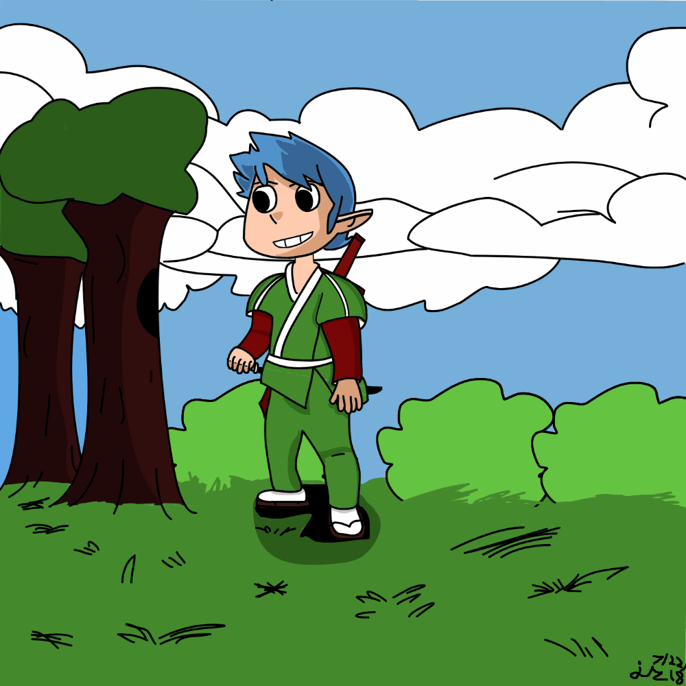

First Real Post!
First real post
How exciting! (lol)
No art to really post about, I did practice today but didn't get anything of note. It's been like... 4 months since I last picked up my art stuff... so very rusty!
But I bought an art tablet today! Yay! But why buy it? Well my art supplies are kinda old, especially the erasers. They love to leave smudges and it's quite annoying. But more so than that, productions will be a lot faster this way, using references on the computer vs eyeing on paper will save lots of time. Overall this is a great way to speed things up.
Another reason why is my process is kinda slow. I would first draw on paper, take a pic, then draw that on the computer. Why start on paper? I only had a mouse and while I have done a few art stuff with only the mouse as seen below:
This character is named Pretz, made in 2018. Not much to say.

This is the banner I made for a friend for Oceanfront 4. Great tourney.

This is the banner I made for my friend yet again, for Oceanfront 5. So many great memories! The logo was made by my good friend, Tercero.
For those curious, I got the Wacom Intuos Small Graphics Drawing Tablet. Medium costs too much and a good friend of mine recommended me this; she uses it personally and makes amazing art. I commissioned her to make this—based on my OSRS character (I don't own Justicar anymore though lol). Check her out here.

That's all that there is to write about for now. I'll be receiving it tomorrow (9/28) and will be practicing. Next update should be more exciting.